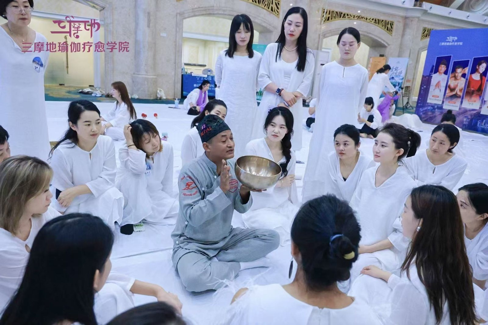

Nepal · Craft
Nepal · Craft
Since the 1990s
Family Tradition
Rooted in Kathmandu family craft, Master Saroj Shakya built a lifelong practice — mastering hand-beaten bronze acoustics and training future singing bowl therapists at the workshop.
For over thirty years, Master Saroj Shakya has cultivated and taught Himalayan singing bowl practice — rooted in Kathmandu artisan lineage, shared across Asia and Australia, and preserved daily at Shriba in Thamel.
Across three decades, Master Saroj Shakya has carried forward the craft and healing sound of Himalayan singing bowls — not simply to preserve heritage, but to let it breathe in daily practice.
Here, heritage is not preserved in isolation but lived and taught — in hand-beaten bronze, authentic floor therapies, and masterclasses carried from Kathmandu courtyards to meditation halls around the world.
Nepal · Craft
Since the 1990s
Rooted in Kathmandu family craft, Master Saroj Shakya built a lifelong practice — mastering hand-beaten bronze acoustics and training future singing bowl therapists at the workshop.
 Vietnam · Class
Vietnam · Class
2019–2024
Carrying Himalayan sound traditions across Southeast Asia, leading therapist certification courses, sound meditation classes, and masterclasses for hundreds of students in Vietnam and Thailand.
 Australia · Journey
Australia · Journey
2019–2024
Sharing the restorative frequencies of traditional singing bowls with global communities, conducting outdoor bell ceremonies and therapeutic sound gatherings across Australia.
 Kathmandu · Studio
Kathmandu · Studio
2023
Opens Shriba in Thamel, Kathmandu — establishing an intimate, unhurried sanctuary for one-to-one floor therapy, tactile sound immersion, and hands-on singing bowl workshops.
 China · Festival
China · Festival
2025
Invited master presenter at the Yoga Meditation Festival in Chongqing, conducting main-stage sound healing with traditional singing bowls and gongs before an international audience.

China · Masterclass2025
Teaching students the precise art of holding and striking traditional bowls, and demonstrating ancient Nepali acoustic placement techniques for deep physical relaxation.
Photographs extracted directly from official professional practice evidence documentation.
Documented Practice
A closer look at the key milestones, teaching journeys, and documentary evidence of Master Saroj Shakya's singing bowl vocation.
Mr. Saroj Shakya (front, green jacket) with trainees at the International Himalaya Singing Bowl Therapist Training course.
Since the 1990s · Kathmandu Valley, Nepal
Rooted in Kathmandu's artisan traditions, Saroj Shakya learned the metallurgy and healing application of hand-beaten Himalayan bronze bowls through generations of family knowledge.
At the workshop in Nepal, he has spent decades teaching students from all over the world how authentic singing bowls are forged, hammered, tuned, and applied for restorative therapy.
Vietnam: singing bowl class in progress, with students seated on mats with singing bowls and instructors at the front.
2019–2024 · Vietnam, Thailand & Singapore
Responding to growing international interest in holistic wellness and authentic sound therapy, Saroj traveled extensively to lead workshops, group sound baths, and therapist certification programs.
In Vietnam, Thailand, and Singapore, he introduced hundreds of students to the respectful, patient art of sound meditation — ensuring the traditional knowledge remained pure and unadulterated.
Australia: Mr. Saroj Shakya holding a traditional singing bowl and mallet at an outdoor bell site in Australia.
2019–2024 · Australia
During journeys across Australia, Master Saroj demonstrated the acoustic principles of ancient singing bowls in outdoor sanctuaries and natural landscapes.
Bringing hand-beaten Nepali bowls into harmony with large outdoor bells and natural acoustics, his Australian sessions emphasized listening deeply and reconnecting with bodily stillness.
Kathmandu: one-to-one singing bowl therapy on the floor with soft light and textiles.
2023 · Thamel, Kathmandu
In 2023, Shriba opened its doors in the heart of Thamel, Kathmandu — intentionally conceived as a calm sanctuary away from the bustling streets.
Here, visitors experience personal one-to-one sound floor sessions, learn to hold and play singing bowls at their own pace, and select authentic hand-beaten pieces to take home.
Chongqing, China: Mr. Saroj Shakya (seated, centre) conducting sound healing on stage at the Yoga Meditation Festival.
22–24 August 2025 · Chongqing, China
From August 22 to 24, 2025, Master Saroj Shakya was honored as a featured international presenter at the Yoga Meditation Festival in Chongqing, China.
Seated on the main festival stage with a traditional ensemble of singing bowls and gongs, he conducted full acoustic sound immersions for festival participants and practitioners.
Chongqing, China: Mr. Shakya teaching students, holding a traditional Nepali singing bowl while explaining its use.
22–24 August 2025 · Chongqing, China
Alongside stage sessions, Master Shakya led intensive group workshops, guiding students through the nuanced art of striking, circling, and feeling bowl vibrations.
He also gave live demonstrations of singing bowl placement techniques on participants, showing how vibrational resonance directly releases bodily tension.
Visit Us
Whether you are curious about learning singing bowl techniques or seeking a restful sound session, we welcome you to visit Shriba in Kathmandu.